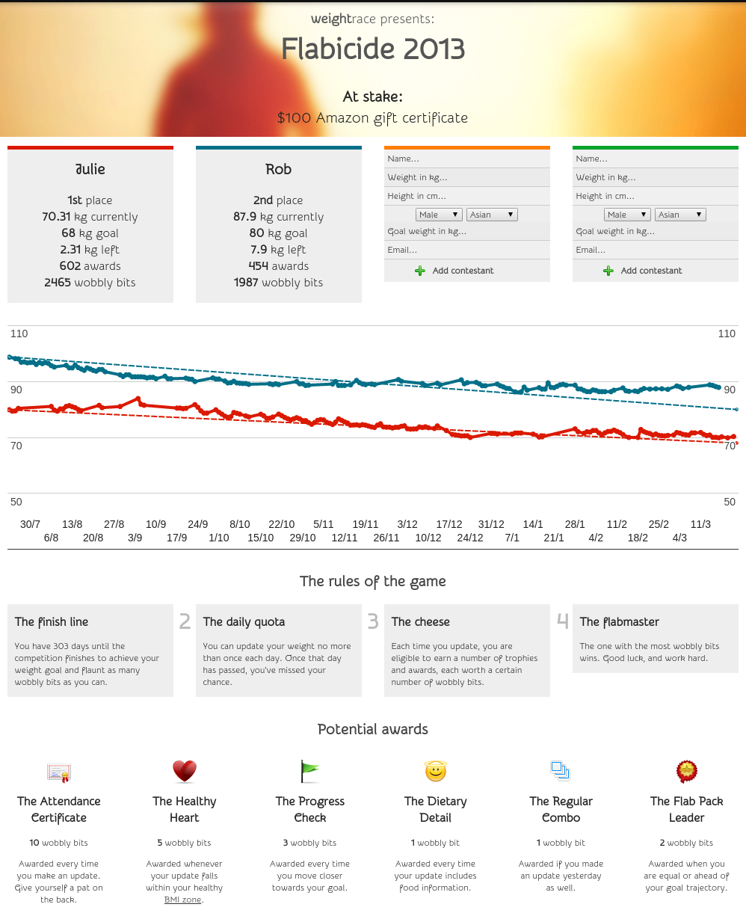

So last year (or perhaps even the year before, time flies!) two people close to me participated in a friendly weight-loss competition. To do this, they used WeightRace.net.
WeightRace is a small web application I built a while ago for fun, which allows up to four contestants to compete towards a weight goal which they would set. They would be prompted daily for weight updates, and would set a reward for the winner. It also used some lightweight gamification so contestants could earn bonus "wobbly bits" when achieving things like their BMI.
But enough talking about the application -- applications are boring! Much more interesting are results! Let's see:

The two contestants -- whom we shall refer to as Rob and Julie, which may or may not be their real name -- and their results are shown in the graph above. Julie is red, Rob is blue, and their linear trajectories towards their weight goal is shown via the corresponding coloured dotted line.
If I could hear a sped-up commentary of the results, it would truly be exciting! Rob makes an excellent head-start well ahead of his trajectory, whereas Julie is having trouble beginning. As we near the holiday (Christmassy) season, we see Rob's progress plateauing, whereas Julie gets her game on and updates with a rigorous discipline. Also great to notice is the regular upward hikes in Julie's weight - those correspond with weekends! As the holidays pass, Rob makes gains and is unable to recover.
In the end, although Julie wins the Race, neither Julie or Rob met their weight goal (note that in terms of absolute figures, Rob actually wins). However, this was all not in vain. Given that almost another year has passed since this race finished, and I can see that Rob's weight is now well under control and has indeed achieved his goal, I'd like to think that the WeightRace has played a role.
In particular, the WeightRace helped raise daily awareness. I believe that it was this daily awareness of the current weight that helped most in the long-term. In addition, the WeightRace helped Rob's body to stabilise around 90kg for half a year! I suspect his body figured out that it could manage at that weight, which made it easier for him to (after the WeightRace) continue to lose weight at a healthy pace.
For those interested in playing with the WeightRace, you can check it out online at WeightRace.net. Note though that it is not actually complete, but works good enough for a competition. For those interested in the source, it's up on my GitHub.